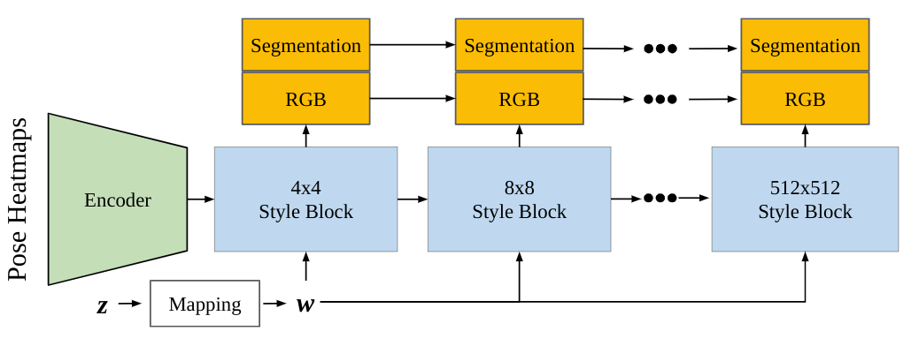
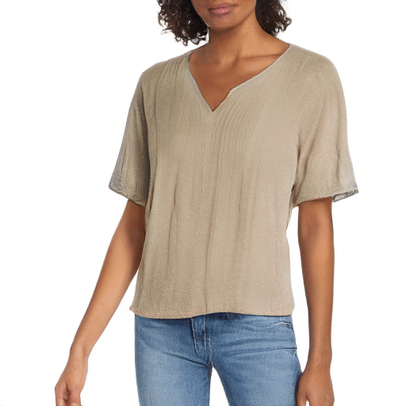
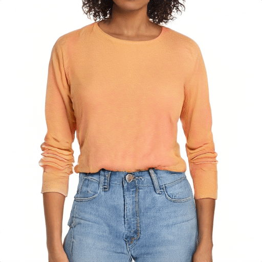
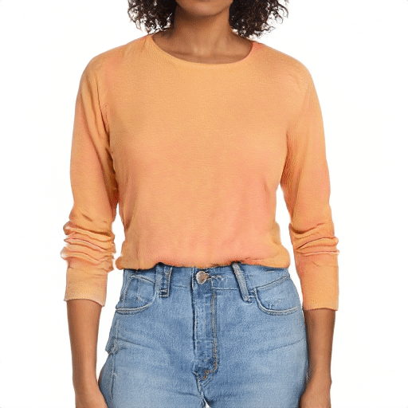
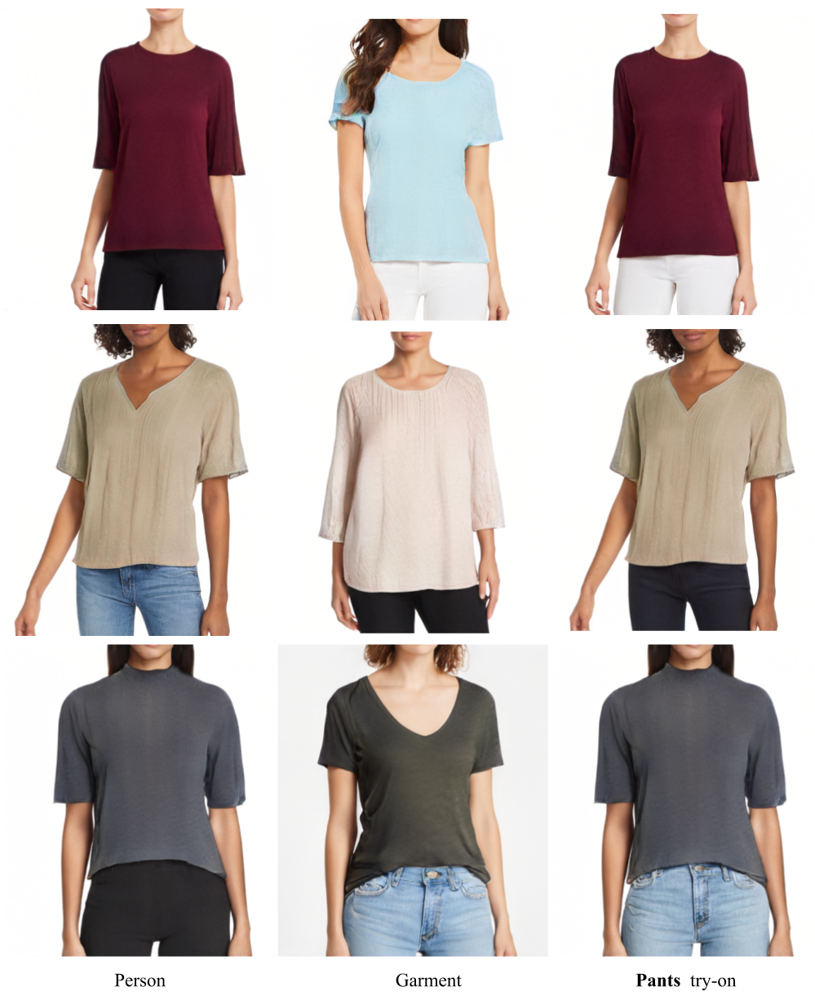
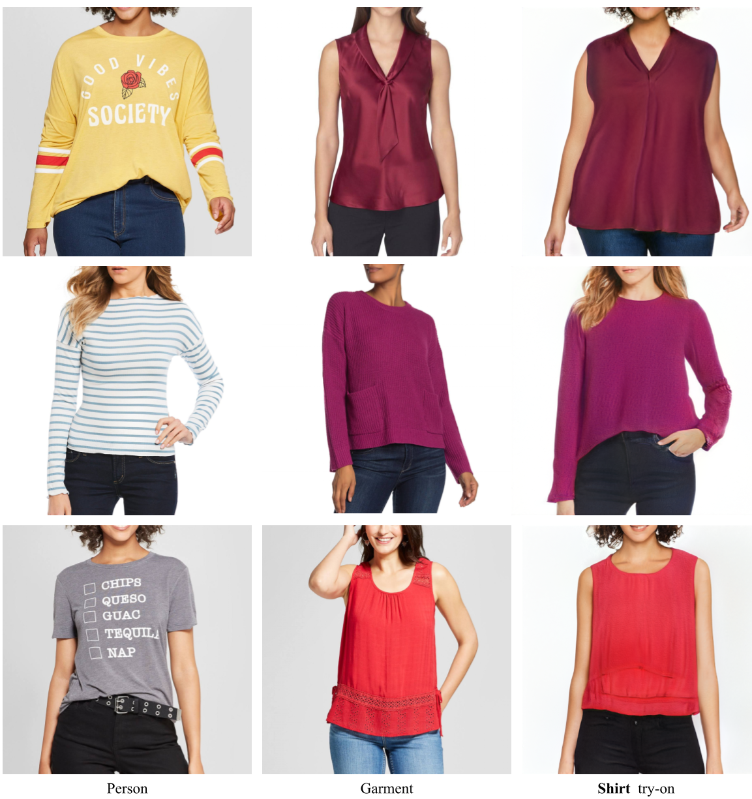

TryOnGAN: Body-aware Try-on via Layered Interpolation
Kathleen M Lewis1,2 Srivatsan Varadharajan1 Ira Kemelmacher-Shlizerman1,3 1Google Research 2MIT CSAIL 3University of Washington
Abstract
Given a pair of images—target person and garment on another person—we automatically generate the target person in the given garment. Previous methods mostly focused on texture transfer via paired data training, while overlooking body shape deformations, skin color, and seamless blending of garment with the person. This work focuses on those three components, while also not requiring paired data training. We designed a pose conditioned StyleGAN2 architecture with a clothing segmentation branch that is trained on images of people wearing garments. Once trained, we propose a new layered latent space interpolation method that allows us to preserve and synthesize skin color and target body shape while transferring the garment from a different person. We demonstrate results on high resolution 512x512 images, and extensively compare to state of the art in try-on on both latent space generated and real images.
TryOnGAN Method
We train a pose-conditioned StyleGAN2 network that outputs RGB images and segmentations.
After training our modified StyleGAN2 network, we run an optimization method to learn interpolation coefficients for each style block. These interpolation coefficients are used to combine style codes of two different images and semantically transfer a region of interest from one image to another. This method can be used for generated StyleGAN2 images or on real images by first projecting the real images into the latent space.

Generated Image Try-On
TryOnGAN can transfer garments between different poses and body shapes. It preserves garment details (shape, pattern, color, texture) and person identity (hair, skin color, pose).
Shirt Try-On
 With TryOnGAN, the same person can try on shirts of different styles (above). The identity of the person is preserved. When transferring a shorter garment or a different neckline, TryOnGAN is able to synthesize skin that is realistic and consistent with identity (below). Different people can also try on the same shirt (below). The characteristics of the shirt are preserved across different poses and people.

Different people can also try on the same shirt (below). The characteristics of the shirt are preserved across different poses and people.

Pants Try-On
Projected Image Try-On
Virtual try-on between two real images is possible by first projecting the two images into the StyleGAN Z+ latent space. Improving projection is an active area of research.
Shirt Try-On
Comparison with SOTA

Wang, Bochao, et al. "Toward characteristic-preserving image-based virtual try-on network." Proceedings of the European Conference on Computer Vision (ECCV). 2018.
Men, Yifang, et al. "Controllable person image synthesis with attribute-decomposed gan." Proceedings of the IEEE/CVF Conference on Computer Vision and Pattern Recognition. 2020.
Yang, Han, et al. "Towards photo-realistic virtual try-on by adaptively generating-preserving image content." Proceedings of the IEEE/CVF Conference on Computer Vision and Pattern Recognition. 2020.
Acknowledgements
We thank Edo Collins, Hao Peng, Jiaming Liu, Daniel Bauman, and Blake Farmer for their support of this work.BibTex
@article{lewis2021tryongan,
author = {Lewis, Kathleen M and Varadharajan, Srivatsan and Kemelmacher-Shlizerman, Ira},
title = {TryOnGAN: Body-Aware Try-On via Layered Interpolation},
journal = {ACM Transactions on Graphics (Proceedings of ACM SIGGRAPH 2021)},
year = {2021},
volume = 40,
number = 4
}
Contact
Katie Lewis kmlewis@mit.edu